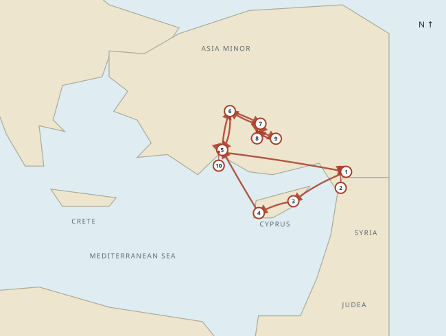
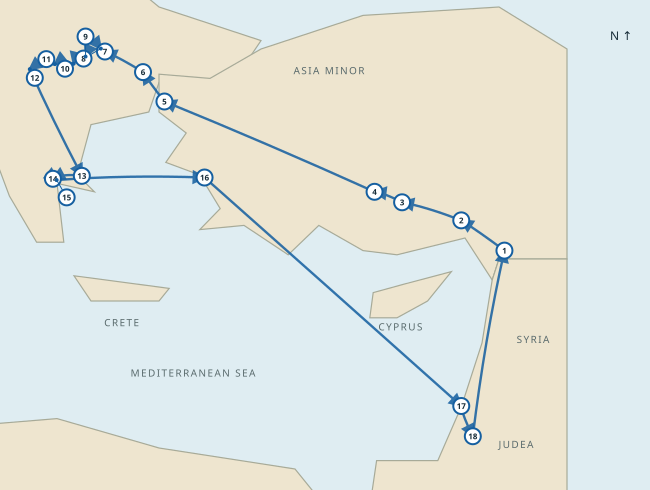
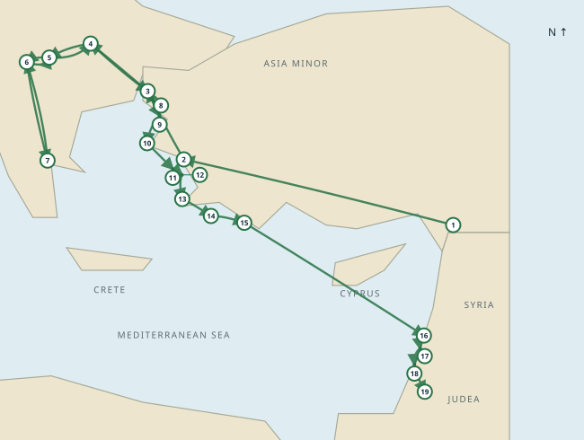
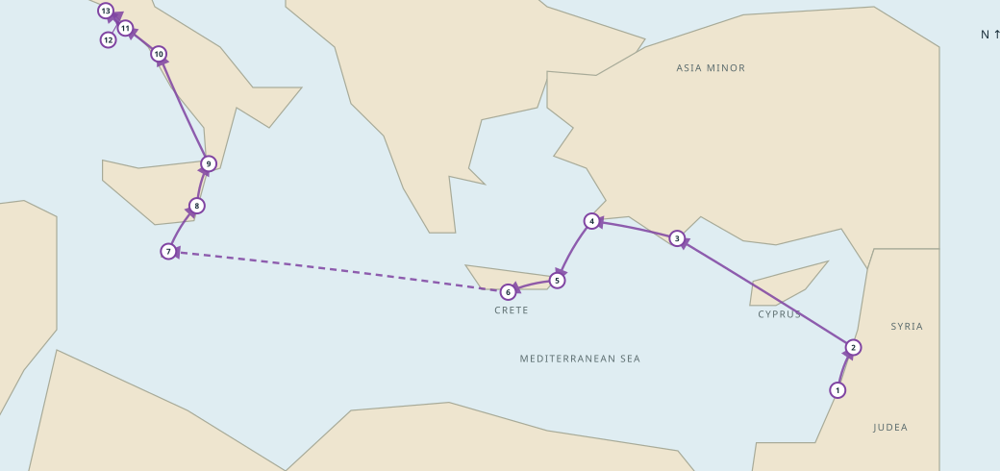

A place to read carefully, compare faithfully, and grow in understanding.
YOUR DAILY READING
Genesis 1
Nine complete translations
Scripture at the center. Space to reflect.
About this translation
Prophecy and Fulfillment
Explore Old Testament passages alongside their New Testament connections. This curated Christian study index is not an exhaustive or universally agreed list. Labels distinguish explicit fulfillment statements, New Testament applications, typology, and narrative connections.
Passage text: World English Bible (WEB), using WEB reference numbering regardless of the reading translation selected above.
Topics
Explore 72 topics, each with seven curated passages available in all nine Bible translations. This study index is a starting point, not an exhaustive concordance. Read each passage in context.
THE GOSPEL ACROSS THE MEDITERRANEAN
Maps · Paul’s journeys
Follow Paul’s ministry through three missionary journeys and his voyage to Rome. Select a journey to explore its route and labeled stops.
First missionary journey
c. AD 46–48 · Acts 13–14
Paul and Barnabas proclaim the gospel in Cyprus and Asia Minor, then revisit the new communities to strengthen them.
━━➤ Travel direction · ① City number in itinerary

On small screens, swipe the map sideways to see all locations. City numbers match the itinerary below; repeated numbers indicate a return visit.
Journey itinerary
1 Antioch (Syria)
2 Seleucia
3 Salamis
4 Paphos
5 Perga
6 Antioch (Pisidia)
7 Iconium
8 Lystra
9 Derbe
8 Lystra
7 Iconium
6 Antioch (Pisidia)
5 Perga
10 Attalia
1 Antioch (Syria)
Map notes: The return route retraces several earlier stops.
Second missionary journey
c. AD 49–52 · Acts 15:36–18:22
Paul travels with Silas; Timothy joins the mission. The Macedonian call leads to ministry in Philippi, Thessalonica, Athens, and Corinth.
━━➤ Travel direction · ① City number in itinerary

On small screens, swipe the map sideways to see all locations. City numbers match the itinerary below; repeated numbers indicate a return visit.
Journey itinerary
1 Antioch (Syria)
2 Tarsus
3 Derbe
4 Lystra
5 Troas
6 Samothrace
7 Neapolis
8 Philippi
9 Amphipolis
10 Apollonia
11 Thessalonica
12 Berea
13 Athens
14 Corinth
15 Cenchreae
16 Ephesus
17 Caesarea
18 Jerusalem
1 Antioch (Syria)
Map notes: The line through Cilicia and Galatia is schematic; Tarsus is a regional waypoint, not an explicitly named stop in this journey. The ascent after Caesarea is traditionally understood as Jerusalem.
Third missionary journey
c. AD 53–57 · Acts 18:23–21:17
Paul strengthens the disciples, teaches at Ephesus, returns through Macedonia, and carries the collection toward Jerusalem.
━━➤ Travel direction · ① City number in itinerary

On small screens, swipe the map sideways to see all locations. City numbers match the itinerary below; repeated numbers indicate a return visit.
Journey itinerary
1 Antioch (Syria)
2 Ephesus
3 Troas
4 Philippi
5 Thessalonica
6 Berea
7 Corinth
6 Berea
5 Thessalonica
4 Philippi
3 Troas
8 Assos
9 Mitylene
10 Chios
11 Samos
12 Miletus
13 Cos
14 Rhodes
15 Patara
16 Tyre
17 Ptolemais
18 Caesarea
19 Jerusalem
Map notes: Galatia, Phrygia, Macedonia, and Greece are summarized in Acts. The inland line and intermediate Macedonian city sequence are illustrative; Troas on the outward route is supported by 2 Corinthians 2:12–13.
Voyage to Rome
c. AD 59–60 · Acts 27–28
As a prisoner, Paul sails toward Rome. A storm leads to shipwreck on Malta; he later reaches Rome and continues proclaiming the kingdom of God.
━━➤ Travel direction · ① City number in itinerary · ┄┄➤ Approximate storm drift

On small screens, swipe the map sideways to see all locations. City numbers match the itinerary below; repeated numbers indicate a return visit.
Journey itinerary
1 Caesarea
2 Sidon
3 Myra
4 Cnidus
5 Salmone
6 Fair Havens
7 Malta
8 Syracuse
9 Rhegium
10 Puteoli
11 Appii Forum
12 Three Taverns
13 Rome
Map notes: The ship sailed under the shelter of Cyprus before Myra. The storm drift from Crete to Malta is approximate; the exact track and shipwreck location are uncertain.
Original schematic study maps, with north at the top and simplified coastlines. Locations, dates, and connecting routes are approximate; lines summarize travel rather than reconstructing exact roads or sea tracks. Primary narrative: Acts 13–21 and 27–28; also 2 Corinthians 2:12–13. Further reading: Pauline chronology.
YOUR COLLECTION
Bookmarks
Saved on this browser.
YOUR REFLECTIONS
Notes
Your saved chapter notes, with verses from the translation used when writing each note. Notes stay in this browser or app installation and are not synchronized to your Institute account.
BACKEND INTERFACE
Bible database
Connected datasets and import coverage.
Commentary collection
Historical commentary is separate from the Bible translation. Haydock (Catholic) accompanies Douay–Rheims; Matthew Henry Concise (Protestant) accompanies the other eight translations. All notes are in English. A 💬 icon opens a verse-range note or a clearly labeled whole-chapter commentary. These collections do not cover every additional apocryphal book included in some editions.
All nine translations are available for reading. Personal notes and bookmarks remain on this browser and are not synchronized to your Institute account.